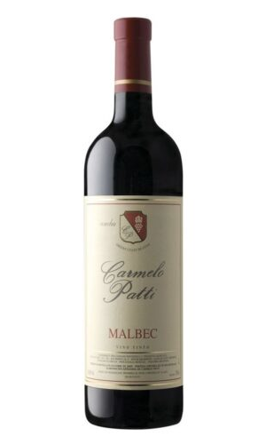

Malbec Ginar Ballester
A la vista de color rojo intenso con reflejos violáceos. De nariz intensa con notas a fruta
fresca
destacando cereza negra, moras, arándano y suave nota floral al agitar aparecen notas a
especias
como pimienta negra y vainilla. En paladar es un vino con cuerpo largo, equilibrado en
acidez con
taninos dulces que invitan a beber.

Malbec Carmelo Patti
Partida limitada de 20.986 elaborado artesanalmente por Carmelo
Patti. A la vista de color rojo medio, con tonalidades azuladas concentración media. En
nariz se perciben
aromas a frutas rojas como ciruela y cassis con poca presencia de madera. En paladar se
perciben sus
suaves taninos, de baja acides y un pequeño dejo dulce.
Malbec Rutini
Rojo violáceo, con matices azulados. En nariz, se destaca una gran complejidad aromática:
notas de
ciruelas entremezcladas con especias que recuerdan a vainilla, anís, pimienta negra, y un
fondo
floral que recuerda a la flor de la violeta. En boca, se reafirman los acentos frutados, sus
taninos
envolventes y sedosos.
Malbec Sombrero
De color violeta intenso, rojo brillante. En nariz tiene gran intensidad aromática. Se
perciben
aromas florales y frutas maduras. Presenta notas de eucaliptus, cáscara de naranja, y
compleja
mineralidad. También notas de crianza en barrica, como caramelo y vainilla. En boca es
untuoso, es
largo y elegante.
Espumante Dada
Delicado espumante dulce natural elaborado con método Charmat. De color amarillo verdoso con
aromas florales y sabor muy frutado. Ideal para comidas exóticas de sabor especiado y salsas
agridulces. Postres, frutas secas y algunos quesos de sabor suave. 100% Torrontés. Servir a
7°C
Espumante Navarro Correa
De color amarillo pálido verdoso. Frutado y floral, sabores a durazno y damasco, persistentes
burbujas y final fresco. Se puede beber como aperitivo, solo, o con entradas de frutos de
mar o vegetales y preparaciones de acento ácido como ceviche. Servir a 5°C - 7°C.
Espumante Vilarnau
Color amarillo pajizo. Nariz: Aromas de fruta madura con toques vinosos, con un toque de tilo
y de flor de vid. Suave y equilibrado, con gran amplitud en boca y final amable e intenso.

Espumante Zuccardi
Amarillo verdoso, con finas cadenas de continuas burbujas que forman un persistente anillo.
Aroma: Intenso ataque de miel. Sabor: De gran volumen. Reseñas a miel se hacen presentes
nuevamente, combinándose con notas a cereales.
Cerveza Antares Stout
Catalina la Grande amaba las emociones fuertes. Por eso, la Imperial Stout, negra y tostada,
empapada de alcohol y pasas, amarga y ahumada, era su cerveza favorita. Esencia inglesa de
exportación. Tímidos, abstenerse.
Cerveza Antares Honey
Babilonia antigua. Tras la boda, el padre de la novia convida al futuro yerno con cerveza de
miel a lo largo de un mes. Así lo dicta la tradición. Honey Beer recoge la historia que dio
origen a “la luna de miel” y lo celebra con notas mento-ladas y frutales. Y, por supuesto,
una inmersión de miel pura para abrir los corazones.

Cerveza Antares Scotch
Escocia es tierra de cebada y la Scotch Ale lleva ese paisaje impregnado en su código
genético. Rubí intenso. Seis grados de alcohol. Dulce y maltosa. Una fórmula a prueba del
paso del tiempo.
Cerveza Antares Kolsch
Existen muchas cervezas doradas y refrescantes. Pero frutadas y con destellos finales de
lúpulo, sólo hay un estilo: la Kölsch. Este estilo rescata la antigua receta de la cerveza
favorita de los bebedores en colonia, Alemania.